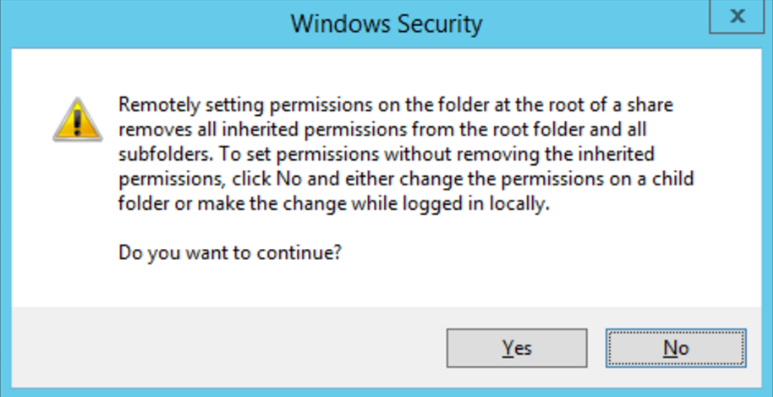

Summary: File System Action Module (FSAM): Changing permissions is overwriting inherited permissions when targeting landing folders of shares.
Issue: FSAM: Changing permissions is overwriting inherited permissions when targeting landing folders of shares.
Have a folder with both inherited and explicit permissions. This folder must be the landing folder of a share.
Execute an action that changes permissions on that folder.
After execution, notice that all inherited permissions are stripped. Only explicit permissions remain. (This is intended Windows behaviour).
Below is a screenshot of Windows warning message that will display if attempting to do the same action through Windows Explorer.

Instructions: N/A
Product: StealthAUDIT
Module: SA - Action Module - File
Versions: 7.1+
Legacy Article ID: 1950